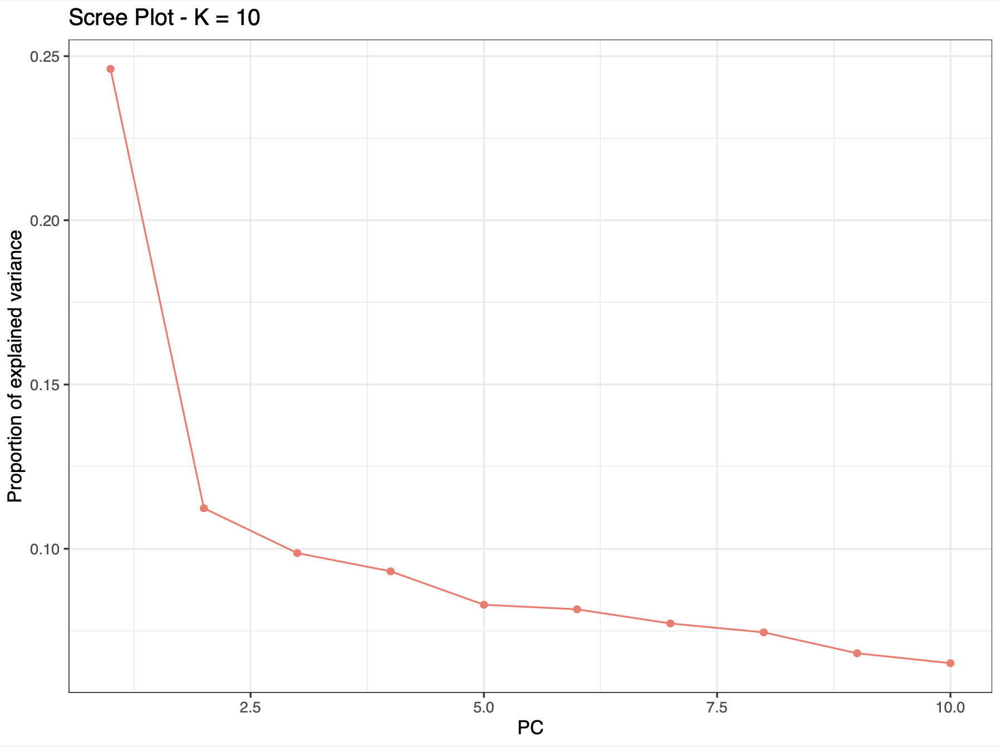
PCA
Authors: KE Lotterhos, DL Davenport, S Truskey
Acknowledgements/ Page Reviewers: Jason Johns, Katherine Silliman
Principal component analysis (PCA) is a multivariate method often used for summarising and visualising genetic data. In MarineOmics, PCA is commonly used to explore population structure and to highlight data issues such as batch effects, outliers, or variation to be explored (i.e. structural variation).
This page aims to provide a helpful resource for applying PCA in the field of population genomics. We provide a brief outline of the PCA method and then detail some ‘ins-and-outs’ as it relates to population genomics. Importantly, there are many existing resources for navigating PCA from both the primary literature and online tutorials, several of which we reference throughout this page. These useful resources can be found in the References section at the bottom of this page!
On this page we outline and describe many aspects of PCA as it relates to population genomics:
- What is PCA and what are its common uses in population genetics?
- Considerations before sampling:
- Considerations while processing data (aka ‘weird stuff that happens in PCA’):
- Comparison to other common approaches to investigating population genetic structure
What is PCA and what are its common uses in population genetics?
Primarily, PCA is about dimension-reduction. PCA captures the linear relationships (constrained, orthogonal axes) that best explain the correlated structure across the data.
In a population genomic context, the variables used for PCA are a matrix (n x m) of n samples (i.e. individuals, populations) and m genetic loci (usually microsatellite or SNP markers; genotypes, likelihoods or allele frequencies). In the case of an n x m (individual x SNP) PCA, each SNP is a variable, so that in a dataset with 500,000 SNPs there will be 500,000 variables (or dimensions) in the data.
Because we cannot visualise 500,000 dimensions, PCA helps us distill these down to increase the interpretability of data while preserving the maximum amount of information (aka variance) . It does this by creating new, uncorrelated variables that maximise variance called “principal components” (PCs, see Pearson (1901)). Like other multivariate methods, PCA involves a series of geometric operations and associated computations, usually achieved by matrix factorization methods (for details see Thioulouse et al. (2018)). In PCA, the first few PCs will account for a substantial proportion of the variation in the original variables, and can consequently be used to provide a convenient lower-dimensional summary of these variables.
The output of PCA are the eigenvalues and eigenvectors (eigenvalues = principal components (PCs), eigenvectors = principal axes) (see here for video explanation) which can be represented as graphical outputs that summarise the information of a large number of variables by a smaller number of dimensions (PCs). When applied to very large genetic datasets, the eigenvectors and eigenvalues are usually determined by a method called singular value decomposition (SVD) or some variation of it, a matrix factorisation method recommended when the number of variables is very large (i.e. often more variables than observed entities, n << m, see this YouTube playlist for details). Other methods use the covariance (or correlation) matrix. The data are usually centered (so it becomes zero mean gaussian, center = TRUE ), and scaled ( scale = TRUE ), where scaling is recommended when the variance is not homogeneous across variables (Jolliffe (2005)).
The eigenvalues represent the amount of variance explained per component and are typically represented as a barplot, in descending order (Figure 1) (also called variable loadings). The percentage of explained variance by each eigenvector will vary between datasets since it is highly dependent on the size of the data and the correlation structure between variables. The eigenvalues are typically used as an empirical way of choosing the number of PCs to represent the data. Usually, the “elbow” of this barplot shows the number of the least amount of variables (PCs) explaining the most amount of variation.
The eigenvectors are represented as a standard scatter plot, where points are samples/individuals represented on the new system of axes (PCs). Dimension reduction to eigenvectors (PCs) means that the 1st PC is the linear combination of the original variables that explains the most/greatest amount of variation, while the 2nd PC accounts for the greatest amount of the remaining variation being orthogonal (uncorrelated) to the 1st PC, the 3rd PC accounts for the greatest amount of the remaining variation being orthogonal (uncorrelated) to the 1st and 2nd PC so on and so on. In population genomics, typically the 1st PC will capture broad scale population structure (because broadly distributed populations are usually the most differentiated) while subsequent axes capture more regional population structure (usually less differentiated at smaller geographic scales, see Figure 2A). However, other cool examples using PCA find the greatest amount of variation is between individuals, particularly in the case of inversions, structural variation or regions associated with a specific phenotype or adaptation (see Figure 2B).
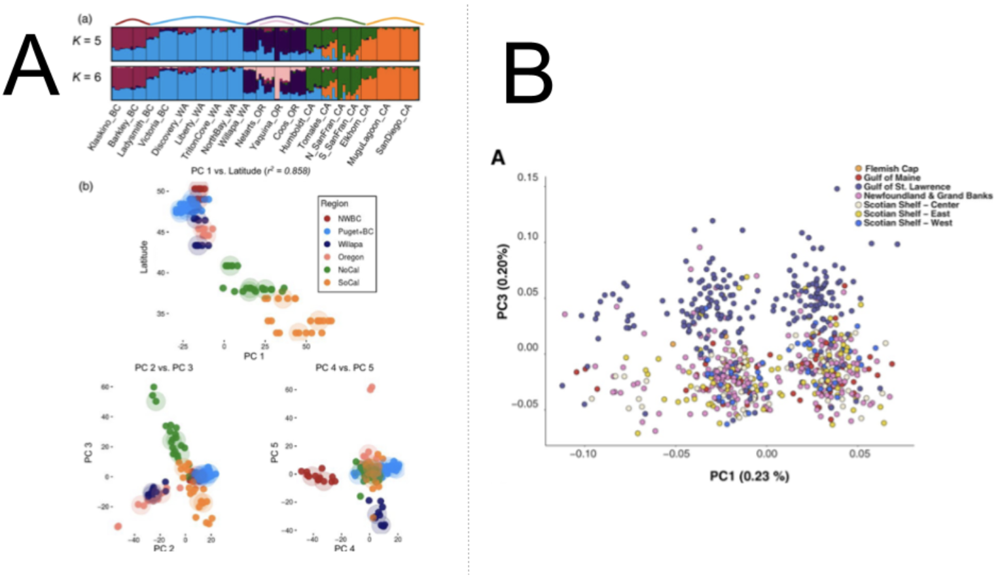
Recommended reading
To get a better understanding of PCA, we recommend reading these useful reviews and studies of PCA:
- Jolliffe, I. & Cadima, J. (2016) Principal component analysis: a review and recent developments
- Pearson K. (1901) On lines and planes of closest fit to systems of points in space. Philos Mag 2:559–572
- Hotelling H (1936) Relations between two sets of variates. Biometrika 28:321–377
- Fentaw Abegaz et al. (2019) Principals about principal components in statistical genetics, Briefings in Bioinformatics
- Josse J., Husson F. (2012) Handling missing values in exploratory multivariate data analysis methods. J. Soc. Française Stat., 153, 79–99.
- François O, Gain C (2021) A spectral theory for Wright’s inbreeding coefficients and related quantities. PLoS Genet 17: e1009665
- Patterson N, Price AL, Reich D (2006) Population structure and eigenanalysis. PLoS Genet 2: e190
- Bakker JD (2023) PCA. Applied Multivariate Statistics in R. University of Washington
Considerations before sampling
How one chooses to sample from a landscape
How samples are selected from a metapopulation also affects the visual pattern in a PCA.
This study by Gompert and Buerkle (2016) simulated a metapopulation along a 1-D stepping stone model with 50 patches (patch - a location in space), where dispersal was allowed only between adjacent patches, leading to isolation by distance (Gompert and Buerkle (2016)).
The authors sampled the patches from the landscape in different ways and then performed a PCA.
Figure 4 from their paper shows how different patterns in a PCA can arise from the same metapopulation, depending on how that population was sampled:
50 individuals were sampled from each patch. Dark red and blue indicate patches on opposite ends, with lighter colors used for more central patches. This graph reflects the weak population structure in the simulation.
5 individuals were sampled from each patch. Dark red and blue indicate patches on opposite ends, with lighter colors used for more central patches.
50 individuals were included from patches 1–4, 24–27 and 47–50. Dark red and dark blue are used to denote peripheral patches and gray is used to denote central patches. This could be incorrectly interpreted as evidence of an isolated hybrid lineage or even hybrid species.
50 individuals were sampled from patches 20–31. Dark red and dark blue are used to denote peripheral patches in the sample and gray is used to denote central patches. In this case, sampling only the central patches also exaggerated the level of population structure. This horseshoe pattern in a PCA is a consequence of distance metrics that saturate (Morton et al. (2017)). This saturation property arises in the case of isolation by distance. With increasing distance between sampled patches, there is a loss of information about dissimilarity among patches (i.e. dissimilarity saturates with distance), and PCA cannot discriminate between samples that do not share any common features.
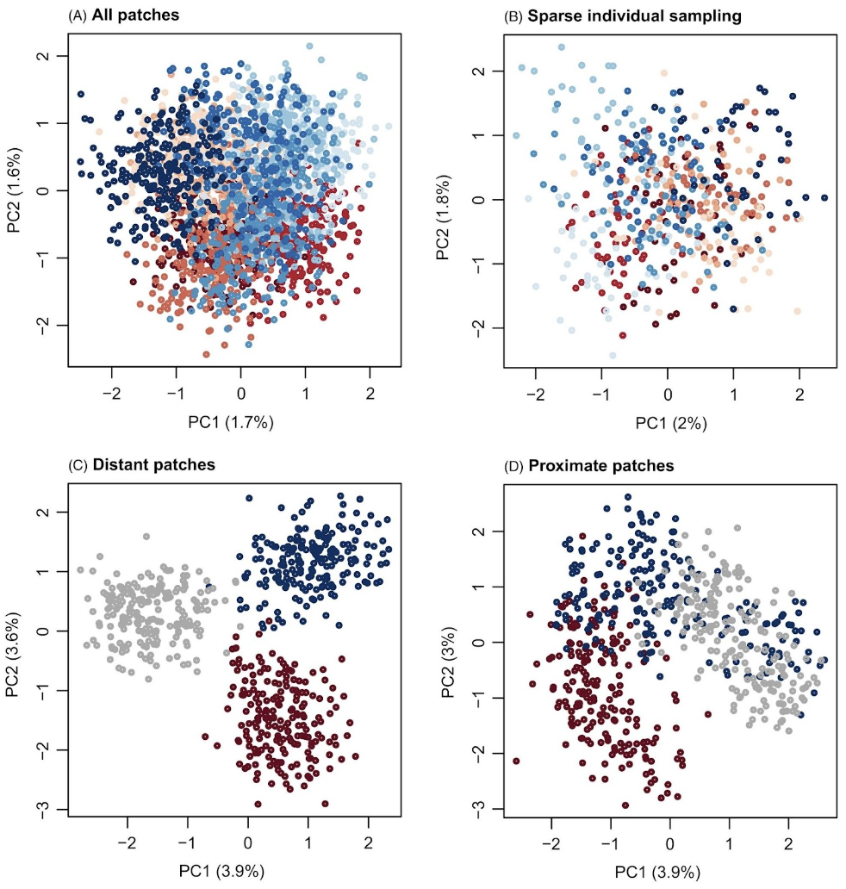
Sample sizes
Uneven sampling between groups, the number of samples and/or the number of markers/SNPs used in PCA can change the PCA projection space, and thus interpretation of results, relative to the true demographic history of the sampled groups.
In the paper “A Genealogical Interpretation of Principal Components Analysis,” McVean demonstrates the relationship between fundamental demographic parameters and the projection of samples onto the primary axes. This paper highlights how different demographic processes can lead to the same projections, and that projections can be influenced by uneven sampling. The study reviews nuances in how PCA is conducted. For example, if one chooses to normalize the rows to have equal variance, it will tend to up-weight the influence of rare variants.
Number of SNPs The number of SNPs sampled has a large impact on the resolution of populations in PC space. In PCA, there is a critical signal-to-noise ratio below which the true structure of the signal cannot be recovered - in other words for genotype data, as genetic distance (i.e. FST) among populations decreases, the number of SNPs needed to separate the signal from the noise increases. The paper makes useful recommendations on how many SNPs would be needed to resolve population structure in PCA space for a given FST for a two population model (see McVean (2009)). Note that number of samples below represents haploid samples, so double the number for diploid samples:
Eq. 1
\[FST > \frac{1}{\sqrt{(number\_of\_SNPs * number\_of\_samples\_per\_group)}}\]
Rearranging, if we know FST and the number of samples per group, we can calculate how many SNPs we would need to sequence for our PCA to be above the signal-to-noise ratio; or if we know FST and the number of SNPs, we can calculate how many samples per group we would need to sequence for our PCA to be above the signal-to-noise ratio:
Eq. 2 \[number\_of\_samples\_per\_group > \frac{1}{(number\_of\_SNPs * FST^2)}\] Eq. 3 \[number\_of\_snps> \frac{1}{(number\_of\_samples\_per\_group * FST^2)}\]
For instance, if FST = 0.01 and there is 100 samples per group, then you would need at least 1/(100 * 0.01^2) = 100 SNPs . If FST = 0.001 and there is 20 samples per group (not out of the question for a marine species), then you would need 1/(20 * 0.001^2) = 50,000 SNPs. Anecdotally, we have observed with SNP data for a high gene flow marine species (low FST) that >50,000 SNPs was needed to resolve structure in PC space between adjacent populations.
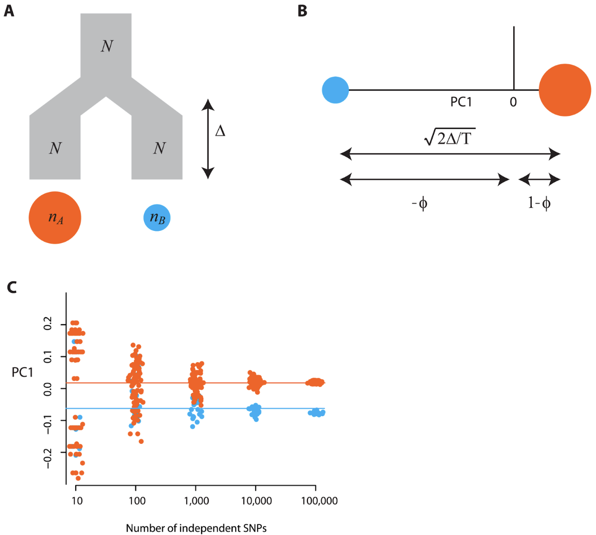
Unequal sample size per population
MacVean (2009) used simulations of two populations of equal size to show how the number of individuals sampled per group influenced PC projections (Figure 4A). Figure 4B shows how groups with larger sample sizes will lie closer to the origin of the first PC axis, while Figure 4C shows the effect of using fewer SNPs on the inferring the true population configuration, where lines indicate the expectation of population scores on the PC-axis.
The author extended this analysis to a 9-population stepping stone lattice. Figure 3 from the paper shows how differences in the number of samples per population can warp the projection space of PCA, even when migration rates and effective population size in each deme are the same (Figure 5). Note that FST among demes would be similar in all panels because it is based on an allele frequency in each deme (although small differences would occur due to sampling error when fewer individuals within a deme are sampled).
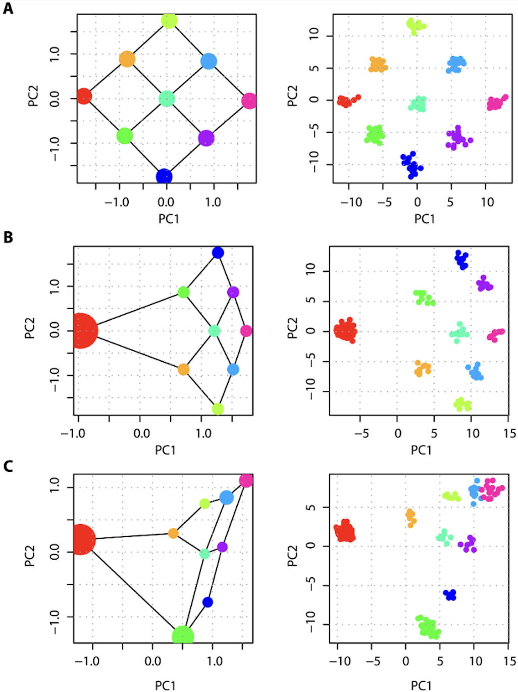
Considerations while processing data (aka ‘weird stuff that happens in PCA’)
Author: KE Lotterhos
We often use PCA because we are interested in understanding population structure using a dataset of genetic markers. However, because PCA is a linear transformation of variables, it can be strongly influenced by varying degrees of non-independence among the samples and variables (i.e. SNPs) that go into the analysis, which in some cases may obscure the structure that we wish to detect. Simply put, samples in a population genetic dataset are never independent of each other due to shared evolutionary history among populations (e.g., population structure), variation in associations among nucleotides within a genome due to linkage disequilibrium, or even variation in data quality due to sequencing (i.e. batch effects)… which means weird things can happen!
In this respect, PCA is a useful tool to apply to your data, both prior to broader analysis, and as an analysis tool. Below we show how PCA can be applied including how it can be used to check for issues in your data during the filtering/cleaning stage (batch effects, missing data, linkage disequilibrium, hybridization), how it can be used to highlight informative loci/samples for further exploration (i.e. structural variation, linkage-disequilibrium, sex-linked markers, hybrids), and how it it is commonly used to visualise population structure in a set of unlinked genetic markers.
Batch effects
Batch effects are caused by technical differences among batches (i.e. groups) of samples in a dataset and may reflect differences in DNA quality, library preparation method, depth of sequencing, sequencing platform, read type (single vs paired-end), and/or read length (Lou and Therkildsen (2022)). These technical differences can result in differences in missing data, genotype error rates, allele frequency estimates, or SNP coverage among batches, causing different batches to appear as unique clusters in PC space. Batch effects can systematically bias genetic diversity estimates, population structure inference and selection scans (Lou and Therkildsen (2022)). Batch effects can be removed with careful read trimming and filtering (see Lou and Therkildsen (2022) and references therein).
As an example, let us consider simulated results from Lou and Therkildsen (2022) depicting batch effects related to differences in sequencing depth in a low-coverage whole genome dataset.
Simulations consisted of nine populations on a 3x3 grid connected to neighbors in a low migration scenario (see Supporting Information at Lou and Therkildsen (2022) for details). In this case, the PCA based on “true genotypes” should look similar to the figure below in which each of the populations are able to be distinguished as separate clusters in PC space.
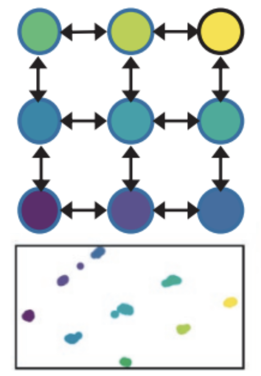
Under these conditions, two batches of sequencing data generation - one reflecting a sequencing depth of 0.125x and the other of 4x - were then simulated for different numbers of individuals sampled from each population. The performance of three different PCA/PCoA approaches to inferring patterns of spatial population structure under these conditions is compared in the figure below.
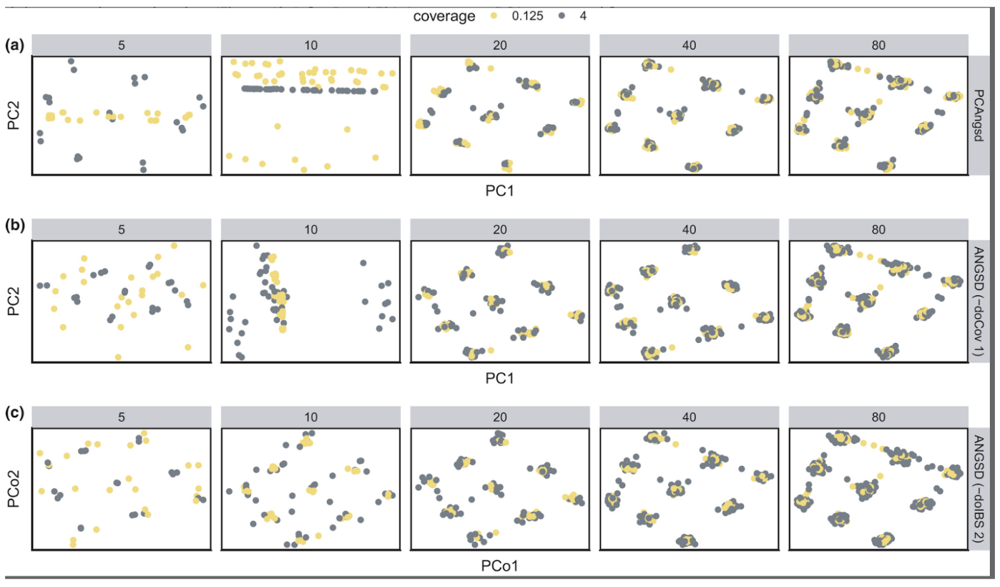
Within each panel of the above plot, the only thing that differs between the two batches of simulated data is their sequencing depth. In this example, we see false patterns of clustering at lower sample sizes (n=5,10) when using the first two PCA approaches (PCAngsd and ANGSD with the -doCov 1 option) in which samples tended to group together according to sequencing depth along one of the PC axes (i.e. a batch effect associated with differences in sequencing depth). As the sample size per population increased from left to right, false patterns of clustering by read depth become less apparent and suggest that larger sample sizes can help to mitigate batch effects caused by differences in coverage.
LD and Inversion effects
Linkage disequilibrium (LD) is the non-random association between alleles and can arise from physical proximity on a chromosome, demography, or selection. LD is often measured as a correlation in allele frequencies across a set of individuals and varies across a genomic map depending on recombination rates, demographic history, and selection. For example, if two SNPs are physically proximate, the allele at one SNP can predict the allele at the other SNP in the same individual because recombination is rare among sites. But LD can also evolve among SNPs that are not physically proximate, for example if an allele at each SNP is under selection. LD is a source of non-independence in genomic data. Variation in linkage disequilibrium across the map of the genome can warp principal components, as initial PC axes are biased to explain genetic variation in LD as opposed to genetic variation among populations (see Figure 2B above).
The following Figure 3 from Lotterhos 2019 (Lotterhos (2019)) illustrates what happens in a PCA on landscape genomic data when there is recombination variation. She simulated a 2-D continuous landscape with local adaptation to an environmental cline, with a genome that consisted of linkage groups with quantitative trait loci that contributed to adaptation, a large neutral inversion (not involved in adaptation), and a region of low recombination (also not involved in adaptation). Even though the SNPs in the inversion made up less than 5% of the total number of SNPs in the PCA, and the inversion was not related to population structure, the first PC axis separated samples by inversion genotype (Figure A below - the second PC axes separated samples based on their haplotype in the region of low recombination).
When SNPs were thinned for LD and then a PCA was run on the data, the PCA showed a pattern of isolation-by-environment, which more accurately captured the population structure in the simulation (Figure B below Lotterhos (2019)).
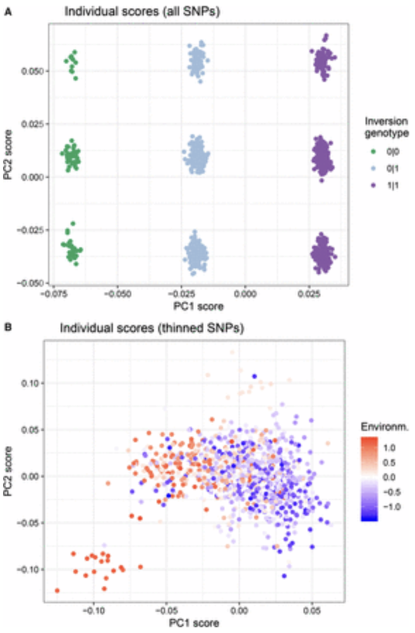
Similar patterns have been observed for sex linked-markers. For example, Benestan et al. (2017) found genetic clustering in a PCA by sex instead of by population structure, which was driven by as few as 12 sex-linked markers in the data. Removing the sex-linked markers led to nonsignificant genetic structure in one species and a more accurate estimation of FST in the second species.
Missing Data in PCA and Imputation
Missing data in population genomic analysis is common. Sometimes it is random, or it may be a feature of the data type (i.e. low coverage NGS, microsatellite null alleles, mutation at RAD cut sites). In general, if missing data reflects a true population signal then it requires careful consideration during analysis.
However, PCA and other multivariate analyses typically do not allow missing data in the input, and many commonly used PCA methods cannot handle missing data which can bias results. It is therefore relevant to know how the implementations of PCA used often in MarineOmics and other conservation genomic studies account, or not, for missing data.
Implementations of PCA in genomics typically (a) avoid missing values (i.e pcadapt, plink) usually by first determining the covariance-matrix or genomic relationship matrix (GRM)) between each pair of individuals using the variables (loci) that are available for both samples or by (b) imputing missing values. Imputation is the process of replacing a missing value with a numerical value via inference. Imputation of missing data can be done by sophisticated methods often seen in genomic association studies, or if you have linked haplotypes or strong genotype-phenotype correlations (see Yi and Latch (2022)). However, in population genomic studies for species of conservation concern which may have few genomic resources, simple imputations such as mean imputation (replace missing with column mean) is commonly encountered.
Imputation via the mean genotype in the metapopulation.
In this case, missing values for all individuals at a locus are replaced with the mean for that locus (also called a mean-imputed matrix). Importantly, when the mean-imputed matrix is centered and scaled, the original missing genotypes become non-informative in PCA (missing values are placed at the origin). This can be problematic if you have a lot of missing data in your dataset, especially if that missing data is biased (not random). Yi and Latch (2022) demonstrated this effect using different simulated populations (no migration. 5% migration, isolation-by-distance-cline) with 1%, 10% and 20% missing data, either randomly distributed among individuals, or biased among some individuals and some populations. They conducted PCA using the adegenet::glPca() implementation of PCA with default mean imputation and standardization, retaining all PCA axes. They found that individuals biased with missing data would be dragged away from their real population clusters to the origin of PCA plots, making them indistinguishable from known admixed individuals, potentially leading to misinterpreted population structure (Figure 9).
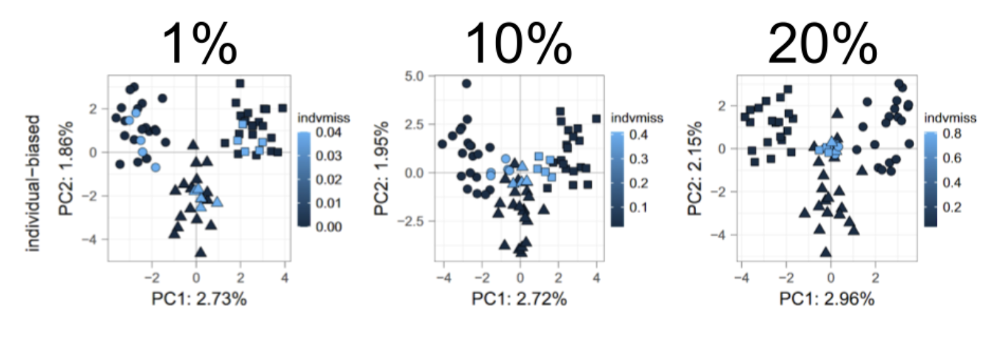
Imputation via the mean genotype within a site, sampling location, or population.
In this case, missing values for each individual sample at each locus is replaced with the mean genotype of other individuals from the same sampling location or population. The effect of this imputation in a PCA is that the mapping for that imputed sample will move closer to the center of the population cluster, and will make the PCA appear to be more clustered (Figure 10). This is because this method of imputation would make samples with missing data look more similar to the samples used to generate imputation values. This method is not recommended (see Yi and Latch (2022)), since within-group mean imputation depends largely on the a priori population designation and can easily bring artificial biases.
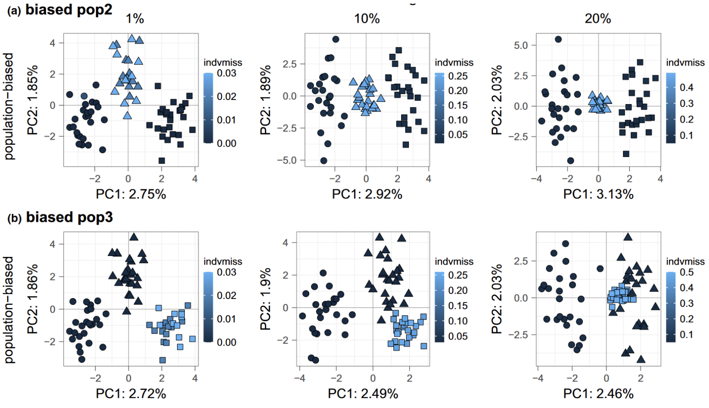
In summary, the choice of imputation can have drastic effects on inference if there is a lot of missing data. When there is population structure and missing genotypes are imputed with the mean genotype across all populations, the genetic differentiation among populations may be artificially reduced and the metapopulation would appear to be panmictic. When there is no population structure and missing genotypes are imputed with the mean genotype within each sampling location, the genetic differentiation among populations may be artificially inflated and it could appear that there is genetic structure when there is not.
Since most genomic data has missingness, it may be preferable to implement a method of PCA which explicitly accounts for it (i.e pcadapt, PCAngsd).
Table 1. Common PCA methods implemented in population genomics studies, a description of how they work, and how they treat missing data. Abbreviations include Singular Value Decomposition (SVD), Single Nucleotide Polymorphism (SNP), genomic relationship matrix (GRM), minor allele frequency (MAF)
| Method or Function, command call | Treatment of Missingness | Ref |
|---|---|---|
| pcadapt | Missing data are coded as ‘9’ in the input. Applies a covariance approach to missing data, outlined in Dray and Josse (2015); this approach deals with missing data by only computing the covariance matrix (also called the genomic relationship matrix (GRM)) between each pair of individuals using the variables (loci) that are available for both individuals (at least until version < 3.x). The updated pcadapt (v.4.x) is very fast, using a truncated SVD algorithm and accounts for missing data using a function which computes the product and cross-product of the (scaled) genotype matrix with a given vector (see Privé, Luu, Vilhjálmsson, et al. (2020) supplementary materials). If you have A LOT of missing data, this method can affect the finding of ‘outlier loci’ (significance of loadings). | Privé, Luu, Vilhjálmsson, et al. (2020); Luu, Bazin, and Blum (2017) |
| NIPALS (Nonlinear Iterative Partial Least Squares) | Missing values are initially set to the row averages, and SVD of the SNP matrix is used to create orthogonal PCs. The PCs which correspond to the largest eigenvalues are then used to reconstruct the missing SNP genotypes in the SNP matrix (REF). | Wold (1975) |
| adegenet::glPCA | Missing values are replaced by the dosage (a factor homozygous ref = 0, heterozygous = 1, homozygous alternate = 2) mean of the column representing the variant | Jombart (2008) |
| SNPRelate::SNPRelatePCA | Missing values are imputed by the dosage mean | Zheng et al. (2012) |
| PCAngsd/EMU | Missing data is imputed based on population structure inferred from the posterior genotype dosages from the top K inferred PCs. The method to choose the top PCs to represent population structure and estimate the individual allele frequencies follows Velicier’s minimum average partial (MAP) (Shriner (2011)). | Meisner et al. (2021); Meisner and Albrechtsen (2018) |
| dudi.pca() | Does not work with missing genotypes. Missingness can manually be replaced or removed | Dray and Dufour (2007) |
| BaseR, prcomp() | Does not work with missing genotypes. Missingness can manually be replaced or removed | R Core Team (2013) |
| vegan::RDA() | This function performs a PCA when no conditions are added. Does not work with missing genotypes. Missingness can manually be replaced, usually by the dosage mean. | Oksanen et al. (2019) |
| Plink PCA | Can implement different computations: The standard computation computes the covariance matrix between pairs of individuals, using only variables (loci) that are available for both individuals (but you can add the modifier “meanimpute” for mean imputation). The randomisation algorithm (aka. FASTPCA) (–pca approx) performs mean-imputation of missing genotypes (see Galinsky et al. (2016)) | Purcell et al. (2007) |
| bigSNPR:, big_SVD() and big_randomSVD() | Does not work with missing data, but offers various functions to impute missingness based on plink, beagle or methods outlined in Wang et al. (2012) | Privé et al. (2018); Privé, Luu, Blum, et al. (2020) |
Hybridization and inbreeding effects
Genetic differences between two different parental species typically constitute the dominant axis of genetic variation in a PCA, with hybrids mapping in PC space between the parental species (Gompert and Buerkle (2016)). However, PC axes can also pick up on differences in homozygosity caused by many generations of inbreeding. These PCA patterns can be informative during early data exploration for identifying cryptic species or hybrids that you may want to remove prior to analyzing for population structure.
Below is Figure 5 from Gompert and Buerkle (2016), with two parental species shown in dark red or dark blue, the F1 hybrids in yellow circles, and the F1-parental backcrosses in the lighter colors. Subsequent crosses between hybrids are shown in yellow with different symbols (F2 squares, F5 upward triangles, F20 downward triangles). F1…FN are genetically intermediate on PC1, and across all hybrids, PC1 mirrors the admixture proportion. In general, PC2 is associated with genetic variation among Fn generations.
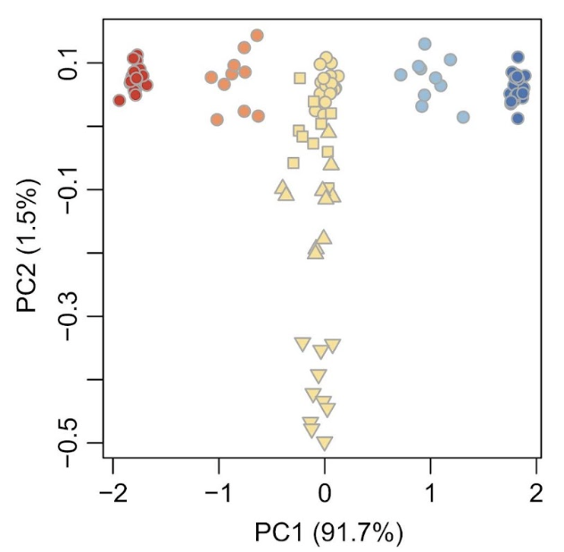
Horseshoe and Wave patterns
Horseshoe patterns arise in population genetic data that has isolation by distance structure, by which genetic differentiation among locations increases with the distance between them. The result when this type of data is put into a PCA is that the pattern looks like a horseshoe (Figure 1B from Morton et al. (2017) below). In Figure 1B, Sample 0 is most distantly related from Sample 20, but they have the same loading on the PC1 axis. Horseshoe patterns also arise in microbial ecology, where they were originally misinterpreted as having an ecological explanation before they were proven to be a statistical artifact (Morton et al. (2017)). The pattern arises in microbial data or genetic data as a consequence of distance metrics that saturate (Figure 1A and C below), typically when distance metrics as used in PCA cannot discriminate between samples that do not share any common features. Figure 1A below shows an isolation by distance or “band” pattern, in which neighboring samples have mostly similar alleles, but the similarity in allelic composition declines with the distance between samples. For example, “Sample 0” has the reference alleles at SNPs 1-10, but does not share the same alleles at any SNPs with samples 10-20. As a result, the euclidean distance (on which a PCA is based) saturates with increasing distance between samples (Figure 1C below).
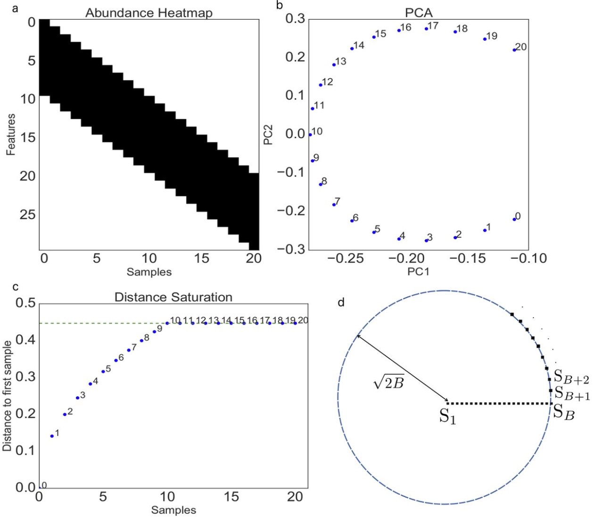
The saturation property of PCA can also create “wave” patterns in a PCA of genetic data, which were initially misinterpreted to be signatures of specific migration events before they were shown to be statistical artifacts (Novembre and Stephens (2008)). Figure 2 from Novembre and Stephens (2008) below shows the pattern arising from simulating a 1-D stepping stone model, which is analogous to marine samples that are collected along a coastline. The horseshoe pattern arises in the first 2PC axes (Figure 2C), but this example also shows the wave patterns that arise on subsequent PC axes.
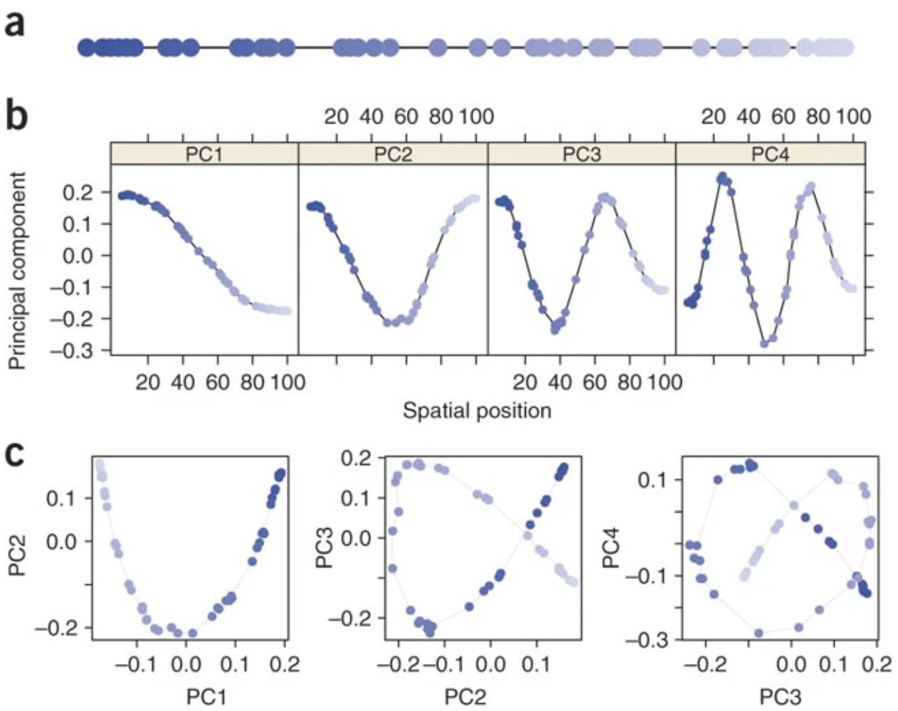
These highly structured patterns are mathematical artifacts that arise generally when PCA is applied to spatial data in which covariance (similarity) between locations tends to decay with geographic distance. These artifacts happen because the distance metrics on which PCA is based do not capture all of the information about genetic dissimilarity along a gradient - in other words, distance metrics cannot discriminate between samples that do not share any common features. Understanding the statistical reasons for the horseshoe and wave effects is useful for correct interpretation of these patterns.
Relationship between PCA and Admixture
In cases of simple two- or three-way admixture, where close relatives of the source populations can be identified and sampled, estimation of admixture proportions can be achieved from projecting samples onto the PCs identified from the source populations. Figure 5 from McVean 2009 below shows an example for human populations from the HapMap3 project. Samples having African ancestry in Southwest USA (ASW) and two groups of samples representing the “source” populations for ASW: (1) Yoruba in Ibadan, Nigeria (YRI) and (2) Utah USA with Northern and Western European ancestry (CEU). The ASW group is admixed between the YRI and CEU groups. The YRI and CEU groups are not necessarily the source populations for the admixed group, but they are closely related to the true source. It is important when using PCA to infer admixture that the PCA is conducted on each chromosome on the two source groups, and all samples are subsequently projected onto the PCA.
In McVean (2009) Figure 5A below, PCA is carried out only on the haplotypes from CEU and YRI and all samples are subsequently projected onto the first PC identified from this analysis. Figure 5A shows how the loadings of individuals map onto PC1 each chromosome (in rows), and note the uniformity of the loadings for the source populations. However for the admixed group ASW, note how there is considerable variation at the level of individual chromosomes, with some chromosomes within an individual appearing essentially European (when a green point maps at the blue end) and others essentially African (when a green point maps at the orange end). Figure 5B below shows how the genome-wide admixture proportions can be inferred directly from the location of admixed samples on the first PC between the two source populations.
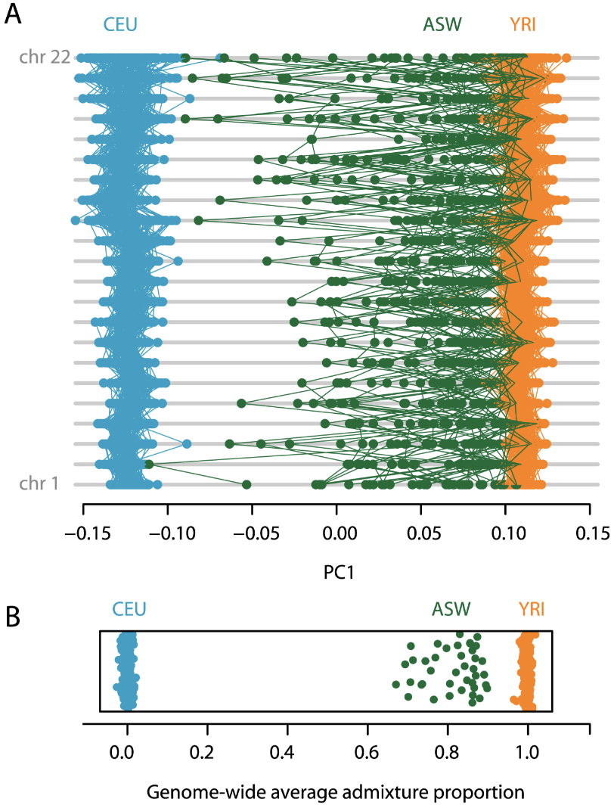
References
Benestan, Laura, Jean-Sébastien Moore, Ben J G Sutherland, Jérémy Le Luyer, Halim Maaroufi, Clément Rougeux, Eric Normandeau, et al. 2017. “Sex Matters in Massive Parallel Sequencing: Evidence for Biases in Genetic Parameter Estimation and Investigation of Sex Determination Systems.” Mol. Ecol. 26 (24): 6767–83.
Dray, Stéphane, and Anne-Béatrice Dufour. 2007. “The Ade4 Package: Implementing the Duality Diagram for Ecologists.” Journal of Statistical Software 22: 1–20.
Dray, Stéphane, and Julie Josse. 2015. “Principal Component Analysis with Missing Values: A Comparative Survey of Methods.” Plant Ecology 216 (5): 657–67. https://doi.org/10.1007/s11258-014-0406-z.
Galinsky, Kevin J., Gaurav Bhatia, Po-Ru Loh, Stoyan Georgiev, Sayan Mukherjee, Nick J. Patterson, and Alkes L. Price. 2016. “Fast Principal-Component Analysis Reveals Convergent Evolution of ADH1B in Europe and East Asia.” The American Journal of Human Genetics 98 (3): 456–72. https://doi.org/10.1016/j.ajhg.2015.12.022.
Gompert, Zachariah, and C Alex Buerkle. 2016. “What, If Anything, Are Hybrids: Enduring Truths and Challenges Associated with Population Structure and Gene Flow.” Evol. Appl. 9 (7): 909–23.
Jolliffe, I. 2005. “Principal Component Analysis: Wiley Online Library.” Google Scholar.
Jombart, Thibaut. 2008. “Adegenet: A R Package for the Multivariate Analysis of Genetic Markers.” Bioinformatics 24 (11): 1403–5.
Kess, Tony, Anthony L Einfeldt, Brendan Wringe, Sarah J Lehnert, Kara K S Layton, Meghan C McBride, Dominique Robert, et al. 2021. “A putative structural variant and environmental variation associated with genomic divergence across the Northwest Atlantic in Atlantic Halibut.” ICES Journal of Marine Science 78 (7): 2371–84. https://doi.org/10.1093/icesjms/fsab061.
Lotterhos, Katie E. 2019. “The Effect of Neutral Recombination Variation on Genome Scans for Selection.” G3 9 (6): 1851–67.
Lou, Runyang Nicolas, Arne Jacobs, Aryn P Wilder, and Nina Overgaard Therkildsen. 2021. “A Beginner’s Guide to Low-Coverage Whole Genome Sequencing for Population Genomics.” Mol. Ecol. 30 (23): 5966–93.
Lou, Runyang Nicolas, and Nina Overgaard Therkildsen. 2022. “Batch Effects in Population Genomic Studies with Low-Coverage Whole Genome Sequencing Data: Causes, Detection and Mitigation.” Mol. Ecol. Resour. 22 (5): 1678–92.
Luu, Keurcien, Eric Bazin, and Michael G. B. Blum. 2017. “Pcadapt : An R Package to Perform Genome Scans for Selection Based on Principal Component Analysis.” Molecular Ecology Resources 17 (1): 67–77. https://doi.org/10.1111/1755-0998.12592.
McVean, Gil. 2009. “A Genealogical Interpretation of Principal Components Analysis.” PLoS Genet. 5 (10): e1000686.
Meisner, Jonas, and Anders Albrechtsen. 2018. “Inferring Population Structure and Admixture Proportions in Low-Depth NGS Data.” Genetics 210 (2): 719–31. https://doi.org/10.1534/genetics.118.301336.
Meisner, Jonas, Siyang Liu, Mingxi Huang, and Anders Albrechtsen. 2021. “Large-Scale Inference of Population Structure in Presence of Missingness Using PCA.” Edited by Russell Schwartz. Bioinformatics 37 (13): 1868–75. https://doi.org/10.1093/bioinformatics/btab027.
Morton, James T, Liam Toran, Anna Edlund, Jessica L Metcalf, Christian Lauber, and Rob Knight. 2017. “Uncovering the Horseshoe Effect in Microbial Analyses.” mSystems 2 (1).
Novembre, John, and Matthew Stephens. 2008. “Interpreting Principal Component Analyses of Spatial Population Genetic Variation.” Nat. Genet. 40 (5): 646–49.
Oksanen, Jari, F. Guillaume Blanchet, Michael Friendly, Roeland Kindt, Pierre Legendre, Dan McGlinn, Peter R. Minchin, et al. 2019. Vegan: Community Ecology Package. Manual.
Pearson, Karl. 1901. “LIII. On Lines and Planes of Closest Fit to Systems of Points in Space.” The London, Edinburgh, and Dublin Philosophical Magazine and Journal of Science 2 (11): 559–72.
Privé, Florian, Hugues Aschard, Andrey Ziyatdinov, and Michael GB Blum. 2018. “Efficient Analysis of Large-Scale Genome-Wide Data with Two R Packages: Bigstatsr and Bigsnpr.” Bioinformatics (Oxford, England) 34 (16): 2781–87.
Privé, Florian, Keurcien Luu, Michael G B Blum, John J McGrath, and Bjarni J Vilhjálmsson. 2020. “Efficient Toolkit Implementing Best Practices for Principal Component Analysis of Population Genetic Data.” Bioinformatics 36 (16): 4449–57.
Privé, Florian, Keurcien Luu, Bjarni J Vilhjálmsson, and Michael G B Blum. 2020. “Performing Highly Efficient Genome Scans for Local Adaptation with R Package Pcadapt Version 4.” Edited by Michael Rosenberg. Molecular Biology and Evolution 37 (7): 2153–54. https://doi.org/10.1093/molbev/msaa053.
Purcell, Shaun, Benjamin Neale, Kathe Todd-Brown, Lori Thomas, Manuel AR Ferreira, David Bender, Julian Maller, et al. 2007. “PLINK: A Tool Set for Whole-Genome Association and Population-Based Linkage Analyses.” The American Journal of Human Genetics 81 (3): 559–75.
R Core Team. 2013. R: A Language and Environment for Statistical Computing. Manual. Vienna, Austria: R Foundation for Statistical Computing.
Shriner, D. 2011. “Investigating Population Stratification and Admixture Using Eigenanalysis of Dense Genotypes.” Heredity 107 (5): 413–20. https://doi.org/10.1038/hdy.2011.26.
Silliman, Katherine. 2019. “Population Structure, Genetic Connectivity, and Adaptation in the Olympia Oyster ( Ostrea Lurida ) Along the West Coast of North America.” Evolutionary Applications 12 (5): 923–39. https://doi.org/10.1111/eva.12766.
Spies, Ingrid, Carolyn Tarpey, Trond Kristiansen, Mary Fisher, Sean Rohan, and Lorenz Hauser. 2022. “Genomic Differentiation in Pacific Cod Using P Ool-s Eq.” Evol. Appl. 15 (11): 1907–24.
Thioulouse, Jean, Stéphane Dray, Anne-Béatrice Dufour, Aurélie Siberchicot, Thibaut Jombart, and Sandrine Pavoine. 2018. Multivariate Analysis of Ecological Data with Ade4. New York: Springer.
Wang, Yining, Zhipeng Cai, Paul Stothard, Steve Moore, Randy Goebel, Lusheng Wang, and Guohui Lin. 2012. “Fast Accurate Missing SNP Genotype Local Imputation.” BMC Research Notes 5: 1–12.
Wold, Herman. 1975. “Path Models with Latent Variables: The NIPALS Approach.” In Quantitative Sociology, 307–57. Elsevier.
Yi, Xueling, and Emily K Latch. 2022. “Nonrandom Missing Data Can Bias Principal Component Analysis Inference of Population Genetic Structure.” Mol. Ecol. Resour. 22 (2): 602–11.
Zheng, Xiuwen, David Levine, Jess Shen, Stephanie M. Gogarten, Cathy Laurie, and Bruce S. Weir. 2012. “A High-Performance Computing Toolset for Relatedness and Principal Component Analysis of SNP Data.” Bioinformatics 28 (24): 3326–28. https://doi.org/10.1093/bioinformatics/bts606.